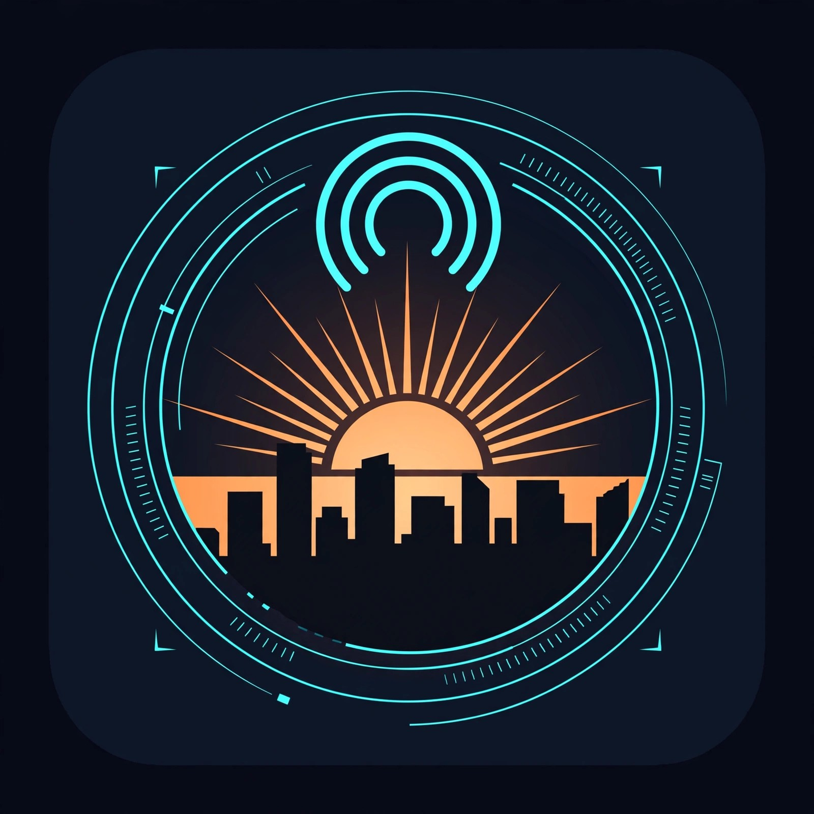

AI and tech news, with receipts.
Rook and Vesper deliver the verified stories that matter every weekday morning — every consequential claim checked against two sources, single sources labeled, zero filler.
https://grimempireholdings-maker.github.io/grim-brief-feed/feed.xml
Use this feed in a podcast app that supports RSS subscriptions. Spotify and Apple Podcasts listings require separate directory submission.
Hosted by JULIAN SHELTON · © 2026 GRIM EMPIRE HOLDINGS LLC
AI-generated podcast.